3D vision & Physical AI
Recovering and generating 3D humans, hands and objects, and the physical interactions between them.
Researcher · Optimization for Efficiency & Robustness
I'm a researcher at the Korea Electronics Technology Institute (KETI), working with Dr. Min-Gyu Park on 3D vision and physical AI. I received my M.S. in Artificial Intelligence from POSTECH under Prof. Namhoon Lee, where I studied optimization for deep learning.
I'm broadly interested in efficiency and robustness in vision and machine learning, which I approach through optimization grounded in understanding how models behave. I now carry this lens into 3D vision and physical AI.
Released three preprints on hand-object interaction: CodeHOI for physically plausible 4D interaction, HORCRUX for single-image reconstruction, and Beyond Rigid Hands for contact-consistent hand meshes.
Our paper on recovering black-box 3D models from pose shifts was accepted to WACV 2027 (Round 1).
Our papers on efficient OOD detection and monocular avatar reconstruction were accepted to ECCV 2026.
Joined the Korea Electronics Technology Institute (KETI) as a researcher, working on 3D vision and physical AI under Dr. Min-Gyu Park.
Our paper on robust concept bottleneck models was accepted to NeurIPS 2025.
Completed my M.S. in AI at POSTECH, advised by Prof. Namhoon Lee.
Our paper on black-box prompt tuning was accepted to ICLR 2025.
Started a project with Samsung Advanced Institute of Technology (SAIT) on visual prompting for MMFM-based VQA.
Our paper on backprop-free federated learning was presented at the ICML 2023 Federated Learning Workshop.
Started my M.S. in AI at POSTECH, joining the Computational Optimization Lab under Prof. Namhoon Lee.
Recovering and generating 3D humans, hands and objects, and the physical interactions between them.
Derivative-free and forward-only optimization for when gradients are unavailable or too costly.
Loss-landscape flatness and curvature as tools for robustness to label noise and distribution shift.
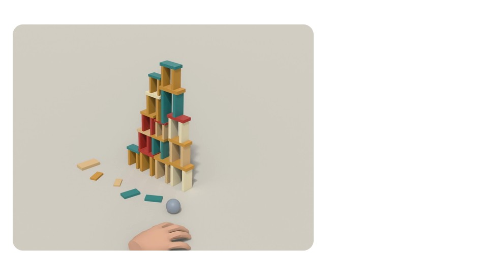

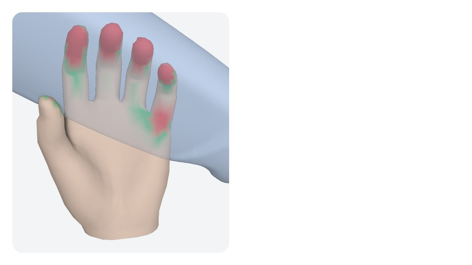
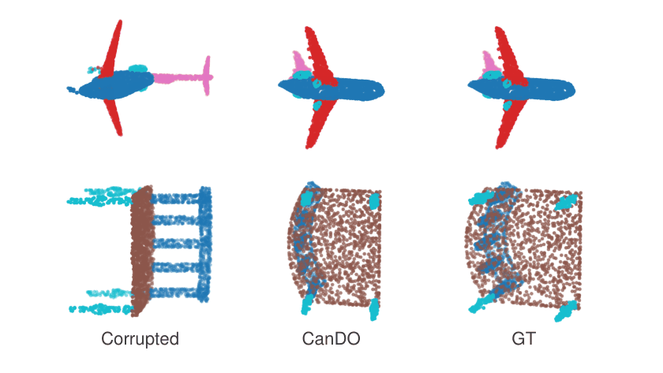
WACV 2027Accepted as a Round 1 paper
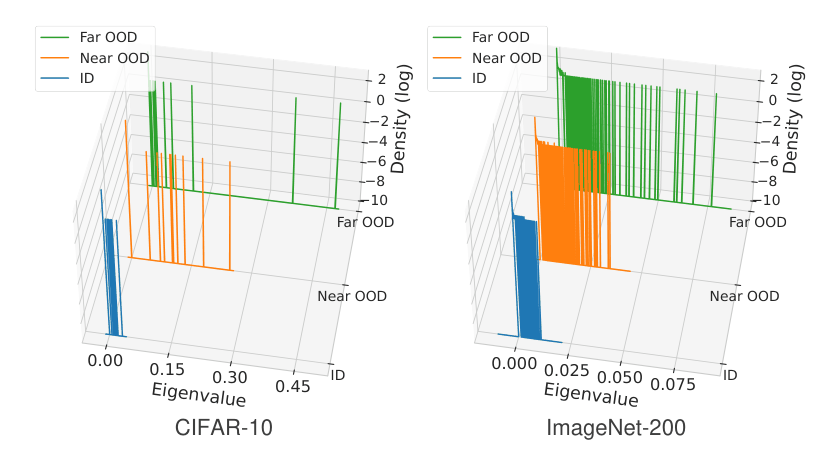
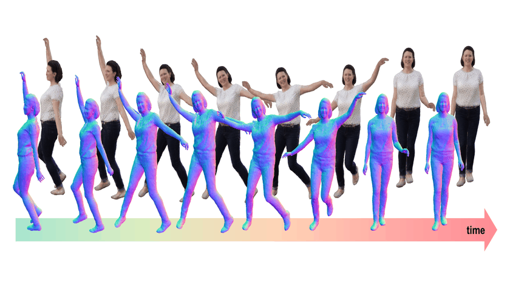
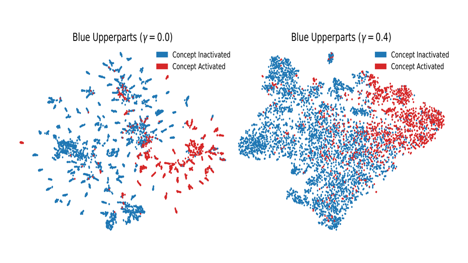
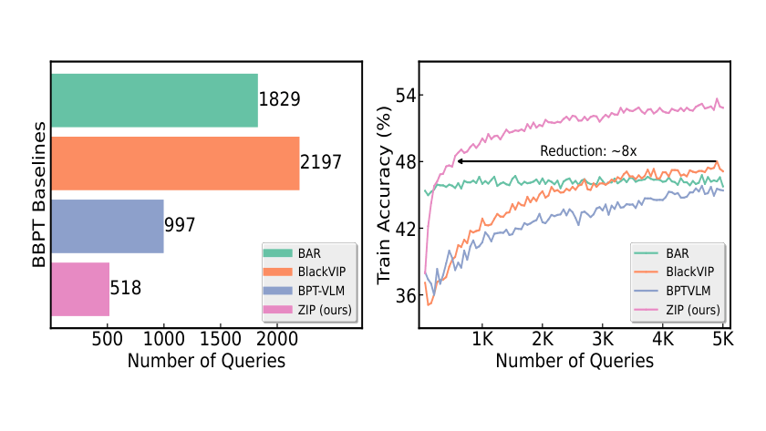
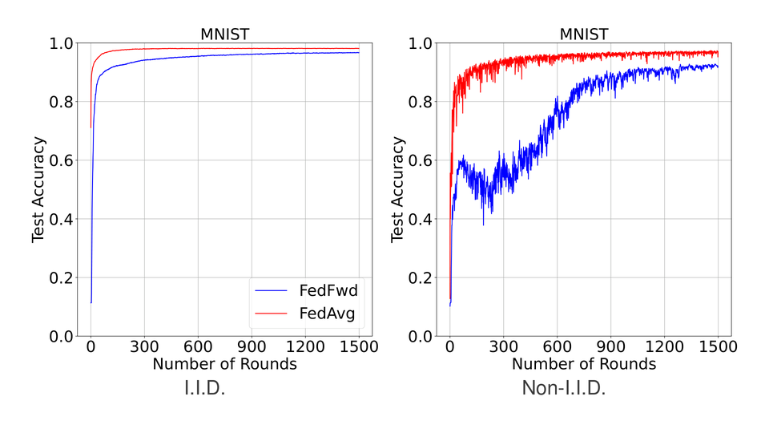
ICML 2023 WorkshopFederated Learning and Analytics in Practice
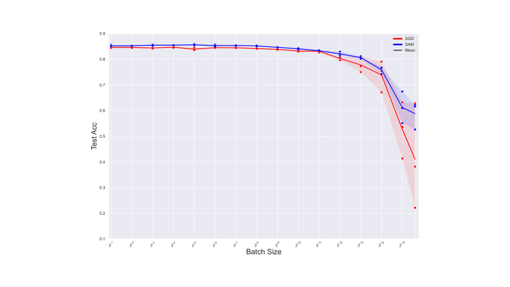
ICML 2023 WorkshopHigh-dimensional Learning Dynamics
No publications match this filter.
3D vision & physical AI.
Supervisor: Dr. Min-Gyu Park.
Model efficiency & robustness through optimization.
Supervisor: Prof. Namhoon Lee.
Multi-modal foundation models for anomaly detection.
Visual prompting for MMFM-based visual question answering.
Prompt tuning for LLM-based VQA.
Supervisor: Prof. Eun-Sol Kim.
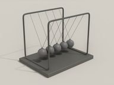
Pull the ball at the left end out to the side and let it go, so that the ball at the right end swings out.
Push the block marked 11 out of the tower without the tower falling.
Pull the slime between your hands until it is twice as long as it was.

Squeeze the soft ring between your thumb and index finger until its hole closes, then let it go.
Pull one tissue out of the box.
Tear the paper into two pieces.
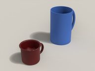
Lift the pitcher by its handle and pour water into the mug.
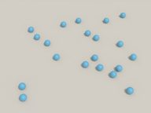
Sweep the marbles together into one pile with your hand.
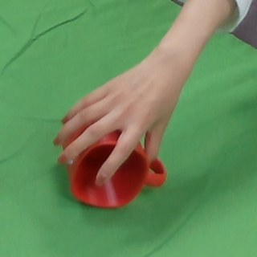
Coarse ContactLoading 3D…
HandObjectContactNearFarDrag to orbit
Loading 3D…
Measured heatCorrectMissedFalseDrag to orbit